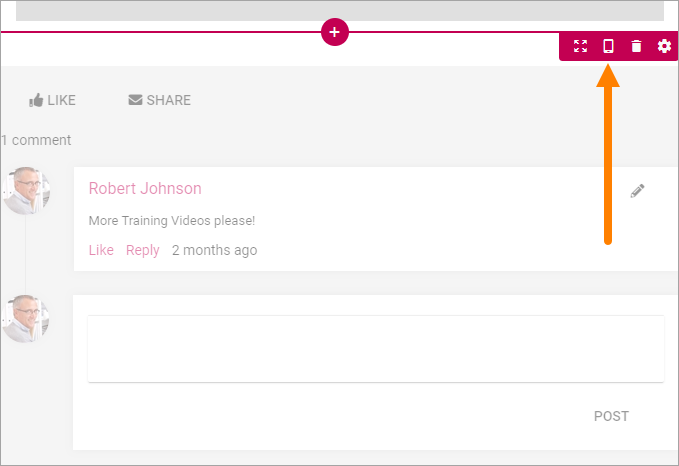
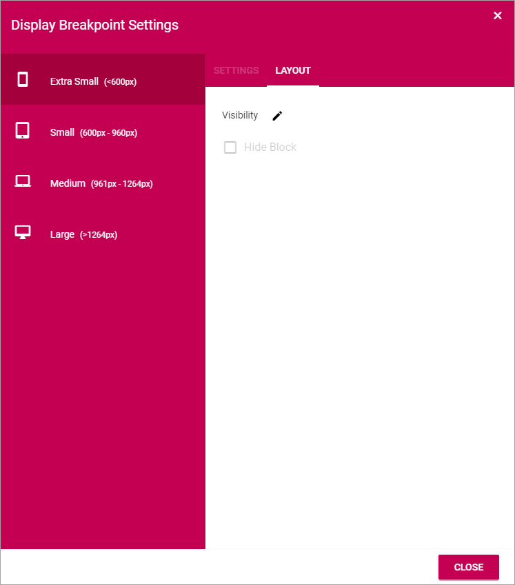

Working with blocks¶
This page contains general information about how to work with blocks.
Note! The Blocks that belong to the Page Type is locked and can not be moved or deleted, and the settings can’t be changed for these Blocks.
Adding blocks¶
To add a block to a page, do the following:
- Edit the page in Design Mode.
- Click on the block that will be before or after the new block so you can se the pluses, and click on the appropriate one (the top one to place the new block above or the bottom one to place the block below).

- Find the block you want to add and select it.
Editing a block’s settings¶
To edit a block’s settings, do the following:
- Edit the page in Design Mode.
- Click the block.
- Click the cog wheel for the block, for example:
Information about how to change specific settings for a block is found in the block’s detailed description.
Moving a block¶
Do the following to move a block.
- Click the block.
- Click the Move icon.
Icons now show where you can move the block, for example:

- Click the icon where you want the block and it’s moved there.

Show the block or not on different devices¶
When you’re working on a block you can select to show it on different devices or not.
Click this icon:
Then you can decide on which devices to show this block:
Removing a block¶
To remove a block. do the following:
- Edit the page in Design Mode.
- Click the block.
- Click the dust bin to remove the block: